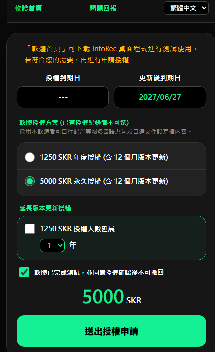

申請軟體授權
本功能用於 InfoRec 軟體的申請授權與驗證作業，本軟體提供 Web3 區塊鏈線上授權與傳統授權驗證(非區塊鏈授權驗證) 2 種方式，取決於您是否具備區塊鏈 Web3 使用能力：。
 申請軟體授權視窗
申請軟體授權視窗
授權設定說明
-
驗證模式與資料填寫
-
「驗證模式」：
- 「線上授權」：即 Web3 區塊鏈線上授權驗證，適合具備網路連線環境、有區塊鏈 Web3 經驗，可自行線上進行驗證的使用者。
-
「申請離線授權」及「協助離線授權」：為傳統授權的驗證方式：
- 「申請離線授權」：傳統軟體授權方式（與區塊鏈無關），或使用 InfoRec 的電腦無網路連線環境時，採用此方式申請授權驗證。申請時將產出申請檔案，請將該檔案交由「協助離線授權」社群成員協助驗證。
- 「協助離線授權」：由具備區塊鏈 Web3 運作環境之社群成員，協助「申請離線授權」的使用者。
- 「軟體使用者資訊」：請填寫軟體申請授權者的相關資料，作為既有軟體版本更新及衍生權益的識別依據。
-
裝置綁定
- 「到期日」：顯示當前既有軟體版本更新之下載權益的有效截止日期。
- 「驗證類別」：可選擇將授權驗證綁定於目前本機的「電腦名稱」，或是外部的「隨身碟」磁區。
- 「裝置識別碼」：系統會自動讀取並顯示所選裝置的唯一硬體識別碼。
-
執行驗證
- 「執行驗證」按鈕：資料確認無誤後，點擊此按鈕將依據您選擇的「驗證模式」執行對應動作：
- 「線上授權」：系統產生 QR Code 引導您完成授權驗證，使用者須持有 SOLANA SEEKER 或 Android 設備（安裝本專案網站提供的 APK）或於電腦上面安裝 SOLANA 錢包（例如 Phantom）。
- 「申請離線授權」：系統會產出驗證申請檔案。
- 「區塊鏈驗證流程」：讀取雲端 Web3 節點驗證資訊以確認最低使用屏障。

區塊鏈進行技術驗證
- 「協助離線授權」按鈕：當驗證模式選擇「協助離線授權」時，此按鈕將切換為可用狀態。執行後會開啟檔案讀取視窗，用以載入由「申請離線授權」端所產生的檔案，隨後再點擊「執行驗證」按鈕，即可進入線上授權流程以完成授權作業。
- 「取得離線授權檔」按鈕：完成協助離線授權之整套作業後，點擊此按鈕即可取得授權驗證檔案，隨後可將該檔案交由「申請離線授權」端電腦匯入完成啟用。